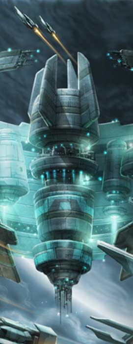
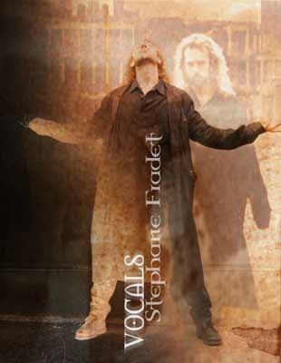

Né le 9 janvier 1977 à Versailles
Complètelent accro à la zique en général et au metal en particulier, c'est tout naturellement que je me suis retrouvé à hurler au sein de FalkirK. Pourtant, nous n'aurions jamais du nous rencontrer grâce à une petite annonce déposée dans un magasin fermé pour vacances....Le destin peut-être. En tout cas, nous sommes source d'espoir pour tous les groupes qui cherchent désespéremment le musicien manquant :-)
J'écoute absolument tout ce qui se fait dans le rock, de Europe ou Scorpions à Death et Pantera. Naturellement, mes préférences vont au juste milieu, à savoir au gros heavy qui tache. Je ne me lasse pas de Savatage, Blind Guardian, Iced Earth, Symphony X et consorts....La liste exhaustive serait bien trop longue. Voici quand même une petite sélection pour les curieux (mais bon, 10 c'est encore très limitatif !)
- BLIND GUARDIAN : Imaginations from the Other Side
- SAVATAGE : Handful of Rain
- METALLICA : Master of Puppets
- SYMPHONY X : Divine Wings of Tragedy
- RHAPSODY : Legendary Tales
- THE GATHERING : Mandylion
- IN FLAMES : Reroute to Remains
- NIGHTWISH : Oceanborn
- ICED EARTH : Alive in Athens
- HELLOWEEN : Keeper of the Seven Keys 1&2
En tant que chanteur, mes idoles sont les vocalistes qui officient dans les groupes pré-cités, avec une mention spéciale pour Jorn Lande qui enterre à mon sens toute concurrence.
Comme le dit Alex, notre moteur est le plaisir, et pas seulement le plaisir de jouer, mais celui de la création artistique. C'est quasiment une drogue, et nous sommes de sacrés junkies...Le fait de faire ça avec des potes est d'autant plus jouissif, et FalkirK continuera tant que l'énergie ne nous fera pas défaut.
Et puis hurler dans un micro, je vous jure, c'est trop bon :-)
_____
Birth : January, the 9th 1977, Versailles
Totally addicted to music,
and especally heavy metal, it was a logical thing for me to scream for
FalkirK.
I listen at everything linked with rock, from Europe or Scorpions, to
Death and Pantera. But I prefer the powerful and melodic bands like
Savatage, Blind Guardian, Iced Earth, Symphony X and this kind of stuff...
The whole list would be much too long. Anyway, here's a little list
(restricted to 10 arggh ! so hard to choose !) :
- BLIND GUARDIAN : Imaginations from the Other
Side
- SAVATAGE : Handful of Rain
- METALLICA : Master of Puppets
- SYMPHONY X : Divine Wings of Tragedy
- RHAPSODY : Legendary Tales
- THE GATHERING : Mandylion
- IN FLAMES : Reroute to Remains
- NIGHTWISH : Oceanborn
- ICED EARTH : Alive in Athens
- HELLOWEEN : Keeper of the Seven Keys 1&2
As a singer, I love the guys who
sing in the bands I just spoke before. But Jorn Lande is really the
one who blows me away...and who is much better than any one else in
my opinion.
As Alex says, pleasure is our fuel, and we especially love the creation
itself, as much as playing. It's like a drug, and we're poor junkies....
Moreover, we are friends, and it's very cool to play together. FalkirK
will live as long as we will have the force :-)
A last thing, try to scream in a mike, is fuckin' great !

